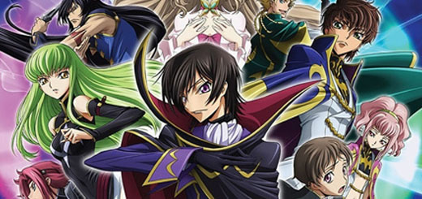
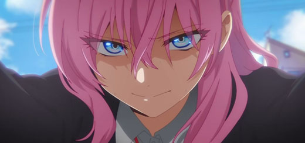
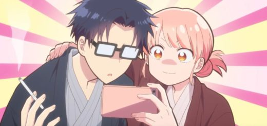
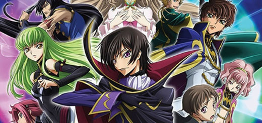
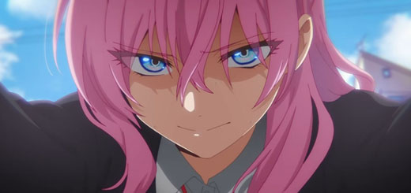
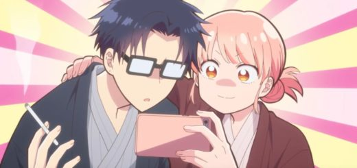

Tudo sobre animes em apenas um local!
 





Neste site estaremos apresentando animes de diversos gostos e categôrias, o conteudo está bem completo para vocês!
Sites para assistir animes Online
Existem diversos sites para ver animes online, porém existem dois que se destacam entre os demais, sendo eles, o Better Animes e a Crunchyroll, o Better Animes conta com uma lista imensa de animes para ver, com uma qualidade excelente.
Já a Crunchyroll, contém funções de maior qualidade, como, assistir o anime legendado após uma hora de lançamento do original no japão, e, assinando a Crunchyroll, você estará apoiando diretamente a industria de animes do mundo inteiro.